14 cards: the 3 new ones first (star, Indian food, jackfruit), then the 11 F–H fixes. Before on the left, after on the right.
“I draw a star on my card.”
Star drawn point-up from the boy's seat
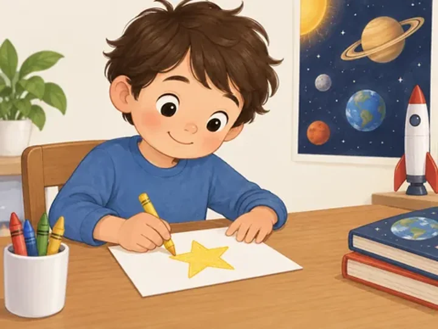
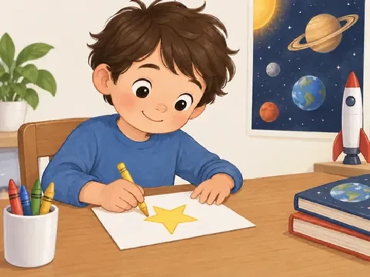
“We tried Indian food at the market.”
Natural family meal at the market
“Grandpa carries a huge jackfruit.”
Average-size jackfruit
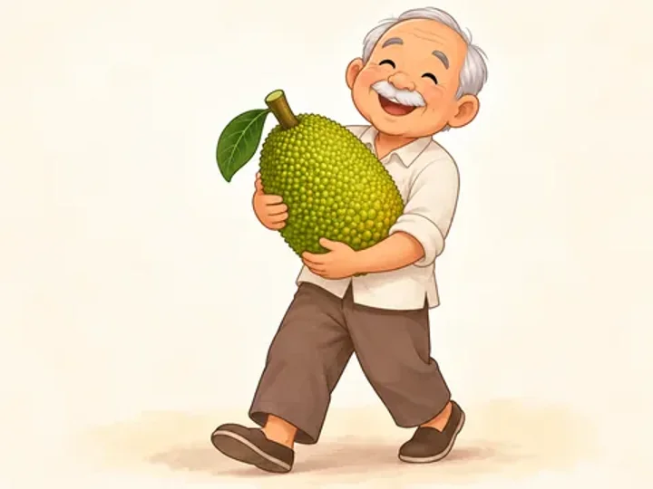
“I find my pencil under the notebook.”
Notebook reads clearly; pencil underneath
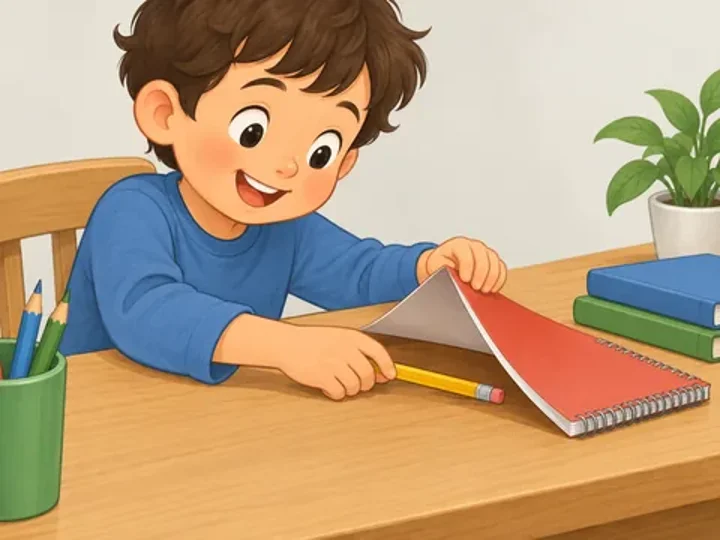
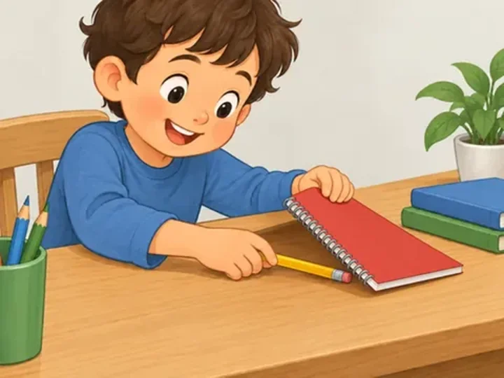
“I keep my drawings in a blue folder.”
Normal folder pocket
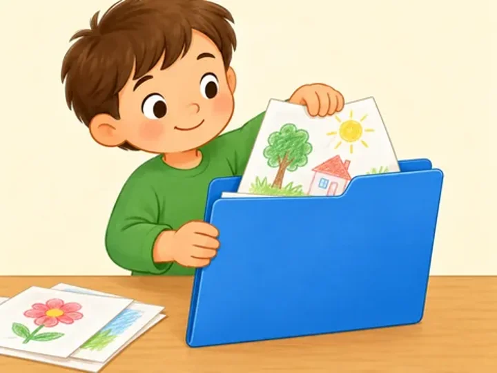
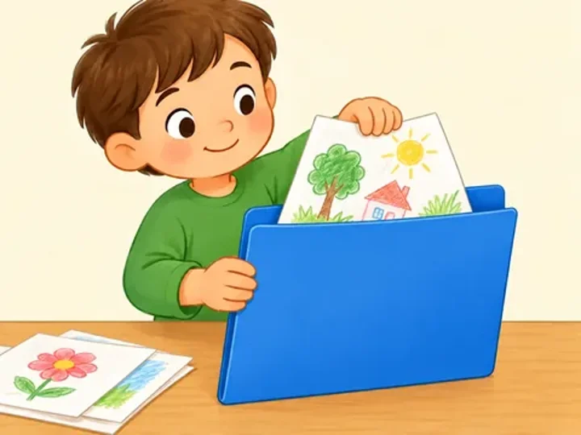
“Vanilla leaves a tiny footprint in the damp sand.”
Small paw prints on Vanilla's path
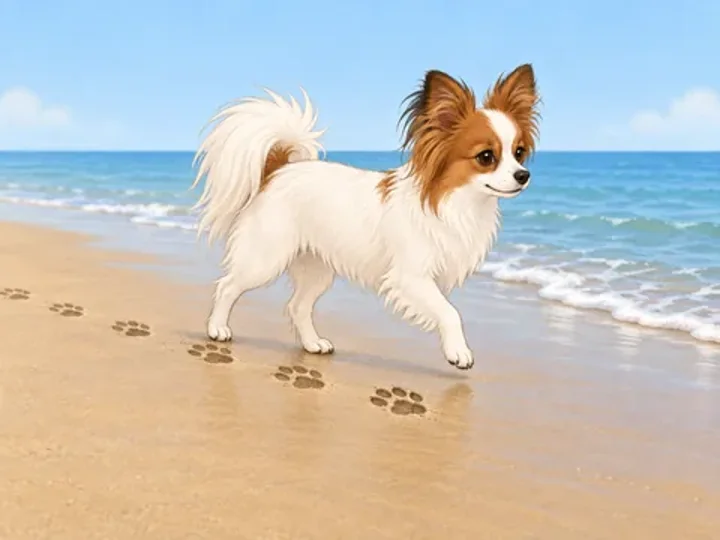
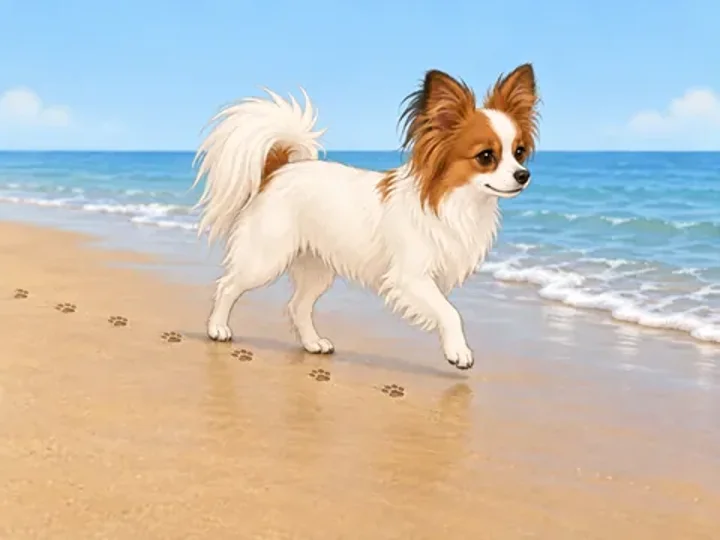
“Grandma adds ginger to the soup.”
Grandma adds sliced ginger naturally
“We draw our map on a square grid.”
Grid upright for the children
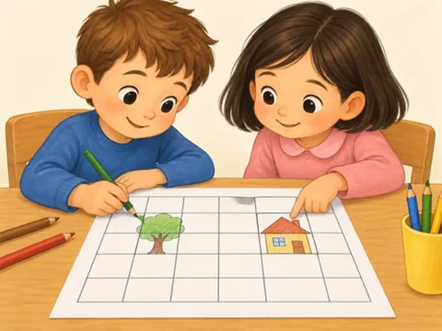
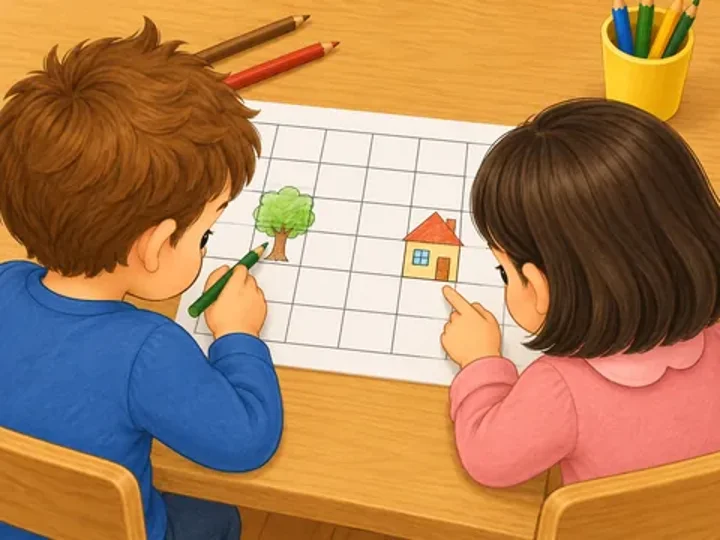
“I jump onto the soft box at gymnastics.”
New safe picture + new sentence
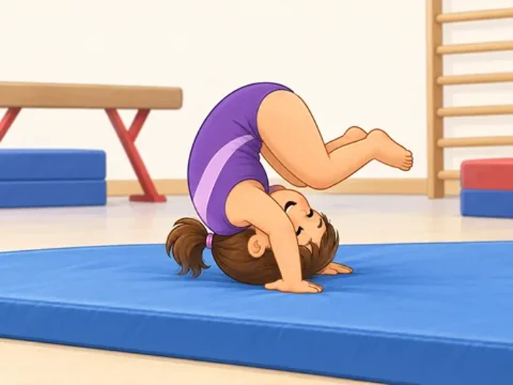
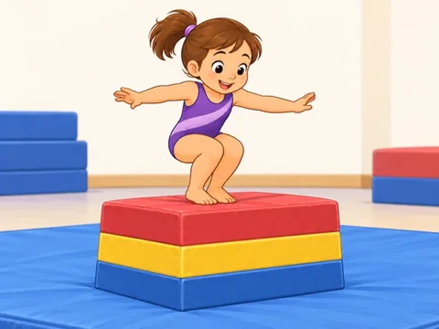
“The first puzzle is easy for me.”
Jigsaw upright for the boy
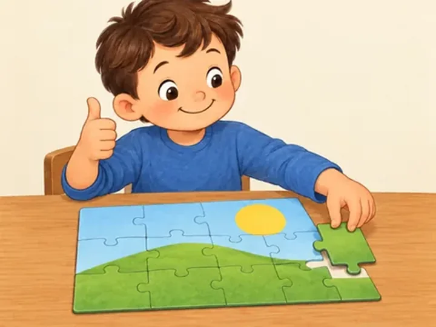
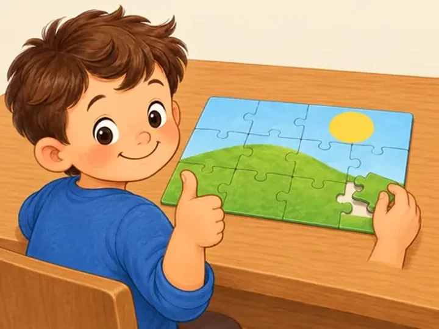
“We leave our shoes in the hallway.”
Shoe counts consistent
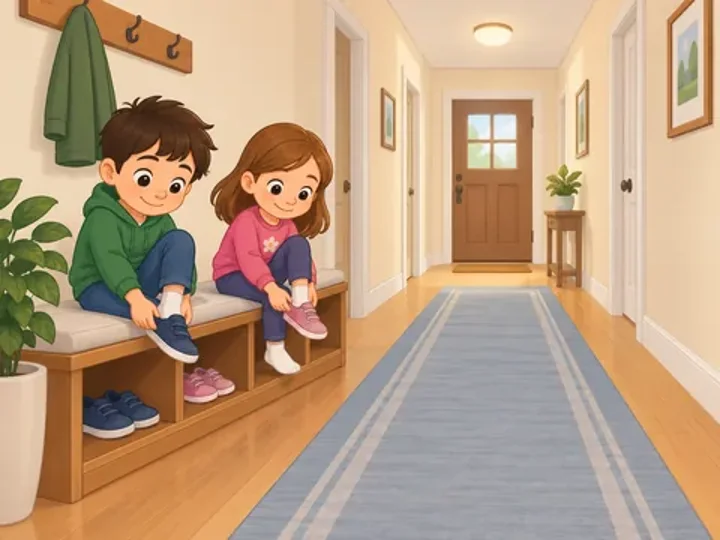
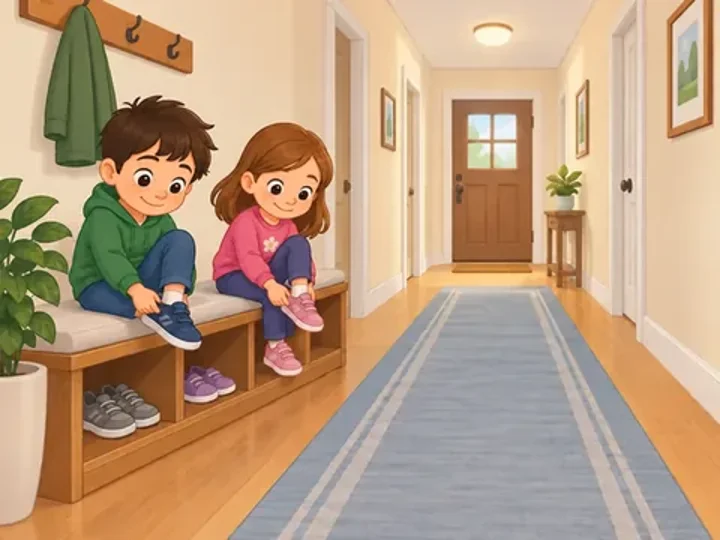
“Vanilla likes to hide her toy behind the cushion.”
Vanilla on-model
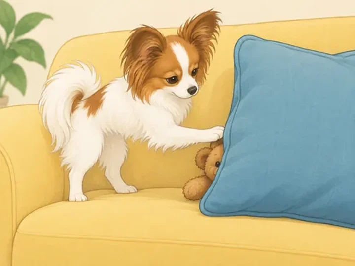
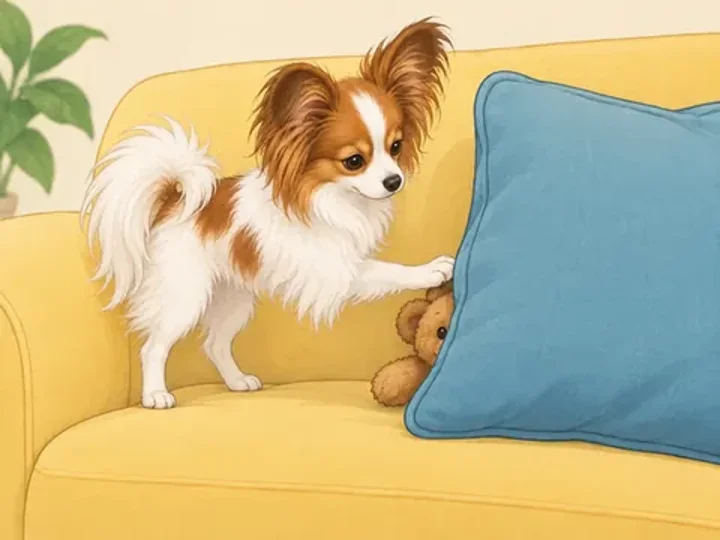
“The unicorn washes himself in the stream.”
Unicorn washes without a prop
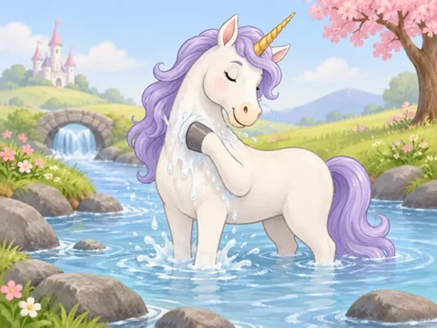
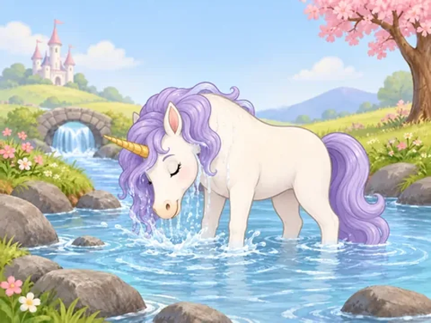
“I finish my homework before dinner.”
Homework upright for the boy
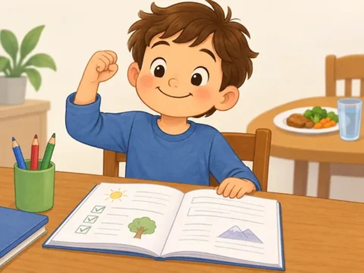
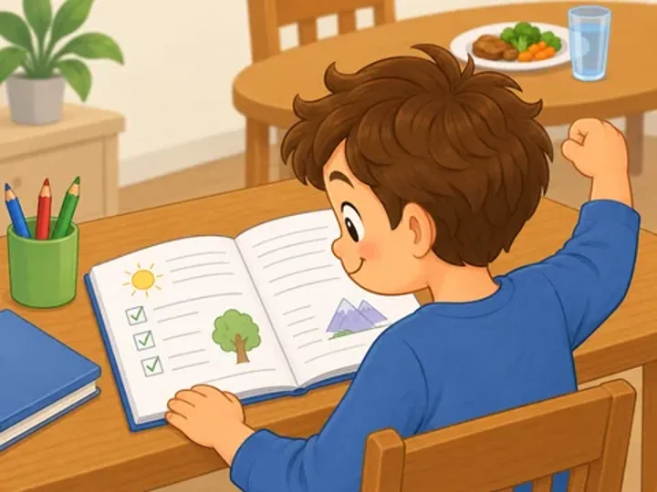